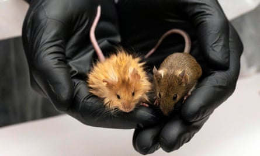

A plan to revive the mammoth is on track, scientists have said after creating a new species: the woolly mouse.
Scientists at the US biotechnology company Colossal Biosciences plan to “de-extinct” the prehistoric pachyderms by genetically modifying Asian elephants to give them woolly mammoth traits. They hope the first calf will be born by the end of 2028.
Ben Lamm, co-founder and chief executive of Colossal, said the team had been studying ancient mammoth genomes and comparing them with those of Asian elephants to understand how they differ and had already begun genome-editing cells of the latter.
Now the team say they have fresh support for their approach after creating healthy, genetically modified mice that have traits geared towards cold tolerance, including woolly hair. “It does not accelerate anything but it’s a massive validating point,” Lamm said.
In the research, which has not yet been peer-reviewed, the team used a number of genome editing techniques to either genetically modify fertilised mouse eggs or modify embryonic mouse stem cells and inject them into mouse embryos, before implanting them into surrogates.
The team focused on disrupting nine genes associated with hair colour, texture, length or pattern or hair follicles. Most of these genes were selected because they were already known to influence the coats of mice, with the induced disruptions expected to produce physical traits similar to those seen in mammoths, such as golden hair.
However, two of the genes targeted in the mice were also found in mammoths, where they are thought to have contributed to a woolly coat, with the changes introduced by the researchers designed to make the mouse genes more mammoth-like .
The team also disrupted a gene associated with the way fats are metabolised in mice and was also found in mammoths, which they suggest could play a role in cold adaptation.
The researchers edited different combinations of these genes, with one technique allowing them to make as many as eight edits in seven different genes at the same time.
Genetically edited mouse with long, thick, woolly hair and a normal mouse at a lab in Dallas, Texas.Photograph: AP
While many of the experiments did not result in mouse pups, mice that were born had various combinations of distinctive hair types including woolly coats, long hair and golden-brown coats . . However, they had a similar average body mass whether or not the gene relating to fat metabolism was modified.
“The efficiency of the edits varied, but many individuals [were] 100% for all attempted edits,” said Beth Shapiro, Colossal’s chief science officer.
Lamm said the team hoped to be able to carry out behavioural tests for cold tolerance in the coming months.
Robin Lovell-Badge, head of stem cell biology and developmental genetics at the Francis Crick Institute in London, who was not involved in the work, praised the technical aspects of the study.
But he said it did not unpick the mechanisms by which the genes produce different hair types, and that de-extincting mammoths would be far more complex than simply altering a few genes for cold tolerance – not least as it was unclear if genetic modifications would be needed to ensure the animals not just look like mammoths but behave like them too.
“My overall concern is whether this is a sensible use of resources rather than spending the money on trying to prevent species becoming extinct,” Lovell-Badge said, adding another problem is that, at present, there are no results on whether the modified mice are indeed cold-tolerant.
“As it is, we have some cute-looking hairy mice, with no understanding of their physiology, behaviour, etc,” he said. “It doesn’t get them [the researchers] any closer to know if they would eventually be able to give an elephant useful mammoth-like traits and we have learned little biology.”
Others stressed the work did not involve introducing mammoth genes into mice, but mainly involved making changes to mouse genes to produce known effects on their coats.
Dr Tori Herridge of the University of Sheffield, said: “Engineering a mammoth-like elephant presents a far greater challenge: the actual number of genes likely to be involved is far higher, the genes are less well understood – and still need to be identified – and the surrogate will be an animal that is not normally experimented upon.”
And while some said the goal of reviving the mammoth had drawn closer, others were more sceptical. “Mammoth de-extinction doesn’t seem to be on the horizon anytime soon,” said Herridge.